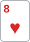
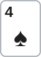
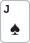

안녕하세요. 대회 초반, 스택 100BB 레벨이에요. 오픈하고 플랍을 놓쳤지만 c-bet을 했고, 상대가 콜했어요. 그리고 턴. 한 번 더 걸까, 여기서 멈출까?
플랍 c-bet이 맞는 선택이었다면, 그 기세로 턴까지 걸고 싶어지죠. 그런데 그 두 번째 벳이 조용히 칩을 새게 하는 자리가 될 수 있어요. 오늘은 플랍 c-bet 계산은 짧게 넘기고, 턴에서 멈추는 판단을 처음부터 끝까지 따라가요.
이 글에서 배울 것
- 플랍 c-bet에 콜한 레인지는 걸러진 레인지라서, 턴 폴드율을 새로 세야 한다는 것
- 체크와 같아지는 폴드율이 알파보다 올라가기도, 내려가기도 하는 이유
- 멈추기로 했으면 체크 뒤 상대 벳에 깔끔하게 손을 떼는 기준
오늘의 한 판
Hero (HJ · 스택 100BB) · 상대 (BTN · 스택 100BB) · 블라인드 0.5/1, BB 앤티 1BB


프리플랍
Hero(HJ) 2.2BB 오픈 → BTN 콜 → SB·BB 폴드. BB가 낸 앤티 1BB와 블라인드는 주인 없이 팟에 남아요.
팟 = SB 0.5 + BB 1 + 앤티 1 + 2.2 + 2.2 = 6.9BB
이번 Hero는 BTN보다 먼저 행동해요. 포지션 없이 치르는 판이에요.
플랍 · 팟 6.9BB


Hero 2.3BB c-bet → BTN 콜. 팟 6.9 + 2.3 + 2.3 = 11.5BB
8♥ 5♦ 4♠는 낮고 서로 가까운 카드들이에요. Hero는 페어가 없는 K 하이이고, K와 Q 두 장이 보드보다 높은 오버카드예요.
턴 · 팟 11.5BB

J♠. Hero는 7.5BB를 다시 걸까, 체크할까? Hero는 체크했고, BTN이 7.5BB를 걸었어요. 이번엔 콜? 폴드?
결론부터 말할게요. 오늘 가정한 BTN이라면 플랍 c-bet은 맞고, 턴은 체크 뒤 폴드예요. 같은 K♣Q♣인데 답이 바뀐 건 Hero 핸드 때문이 아니라 BTN 레인지가 바뀌어서예요. 플랍에서 접을 핸드는 이미 접었고, 턴에 남은 건 전부 페어 이상이에요.
남은 베팅이 있어 실제 결과는 달라질 수 있어요. 그래서 BB 금액은 기준을 구하는 계산용으로만 쓰고, 판정은 폴드율과 기준 폴드율, 에퀴티와 필요 에퀴티 비교로 해요.
오늘의 가정
- BTN 레인지: HJ 오픈에 콜할 만한 포켓페어·수딧 A·수딧 커넥터·브로드웨이로 가정해요(솔버 결과 아님). 프리플랍에 3벳했을 AA·KK·QQ는 뺐어요
- BTN 대응: Hero 벳에는 콜 아니면 폴드(레이즈 없음). Hero가 체크하면 BTN은 턴 레인지 전부로 건다고 단순화해요
- 기준 계산: 콜을 받은 뒤, 그리고 체크 몫을 구할 때는 남은 카드를 양쪽 다 체크로 쇼다운한다고 봐요. 체크 뒤 포기하는 경우의 기준은 3단계에서 따로 봐요
1단계. 플랍 c-bet: R01에서 본 방법 그대로
플랍 판단은 R01에서 본 방법 그대로예요. 상대 폴드율이 체크와 같아지는 폴드율을 넘는지만 보면 돼요. 그래서 여기서는 숫자만 짧게 확인하고, 그 기준이 왜 그 자리에 있는지에 시간을 쓸게요.
| BTN 대응 | 핸드 | 콤보 |
|---|---|---|
| 콜 | JJ~44, A8s·K8s·T8s·98s·87s·86s(8 페어), 76s(스트레이트), 65s(5 페어+거트샷), A5s·A4s·54s(페어 이상) | 71 |
| 폴드 | KQ·KJs·QJs·AJ·ATs·KTs·QTs·JTs·AK·T9s·J9s·Q9s(보드에 안 맞은 하이카드) | 68 |
BTN 폴드율 = 68 ÷ 139 = 약 48.9% 체크와 같아지는 폴드율 약 34.2% → 48.9%가 넘어서 c-bet
기준이 알파보다 높은 이유
2.3BB를 순수 블러프로 보면 알파는 2.3 ÷ (6.9 + 2.3) = 25%예요. 그런데 진짜 기준은 약 34.2%로 더 높아요. 이유는 체크가 공짜가 아니라 몫이 있는 선택이기 때문이에요.
Hero가 체크해서 쇼다운까지 가면, BTN 전체 레인지 상대 에퀴티 약 31.5%만큼 팟을 가져가요.
체크 몫 = 6.9 × 31.5% = 약 2.17BB
벳은 0이 아니라 이 2.17BB를 넘어야 해요. 그래서 기준이 알파보다 올라가요.
접게 해서 버는 건 '지던 핸드'뿐이에요
폴드 칸 68콤보를 Hero 쪽에서 다시 나눠 보면 그림이 더 선명해져요.
| 접는 핸드 | 지금 Hero와 비교 | 콤보 |
|---|---|---|
| AK·AJ·ATs | Hero가 지던 핸드(A 하이) | 32 |
| KJs·QJs·KTs·QTs·JTs·T9s·J9s·Q9s | Hero가 이기던 핸드 | 27 |
| KQ | 비기던 핸드 | 9 |
이기던 27콤보는 체크해도 쇼다운에서 Hero가 가져갈 핸드예요. 이 핸드를 접게 하면 어차피 받을 돈을 벳으로 받는 것뿐이라 더 버는 게 거의 없어요. c-bet이 진짜로 버는 건 A 하이처럼 Hero가 지던 핸드를 접게 할 때예요.
이게 무슨 뜻이냐면, 쇼다운 몫이 있는 핸드일수록 블러프 기준이 알파보다 올라간다는 거예요. 오늘 플랍은 BTN이 하이카드를 많이 버려서 그 높아진 기준도 넘었어요.
2단계. 턴: 콜한 레인지는 다른 레인지예요
무엇이 걸러졌나
플랍 폴드 칸의 하이카드 68콤보는 이제 없어요. 남은 건 콜 칸 71콤보예요. 여기에 J♠가 깔려 JJ가 6콤보에서 3콤보로 줄었고, 턴 레인지는 68콤보가 됐어요.
이 68콤보는 하나도 빠짐없이 페어 이상이에요. 포켓페어, 8 페어, 5·4 페어, 투페어, 스트레이트까지요. 지금 K 하이인 Hero가 이기고 있는 핸드는 하나도 없어요.
J♠가 BTN에게 준 것
J♠는 Hero에게는 아무것도 주지 않았어요. K나 Q가 아니니까요. 반대로 BTN 쪽에는 몇 가지를 줬어요.
- JJ는 셋이 됐어요
- 7♠6♠은 이미 스트레이트인데, 4♠·J♠로 스페이드 플러시 드로우까지 붙었어요
- TT·99는 J가 오버카드로 왔지만, 여전히 Hero보다 높은 페어예요
다시 센 폴드율
턴에 Hero가 7.5BB(팟의 약 65.2%)를 걸면 누가 접을까요?
| BTN 대응 | 핸드 | 콤보 |
|---|---|---|
| 콜 | JJ·88·55·44(셋), TT·99, 8 페어(A8s·K8s·T8s·98s·87s·86s), 76s(스트레이트), A5s(5 페어), 54s(투페어) | 50 |
| 폴드 | 77·66(거트샷 붙은 포켓페어), 65s(5 페어+거트샷), A4s(4 페어) | 18 |
BTN 폴드율 = 18 ÷ 68 = 약 26.5%
플랍의 약 48.9%가 턴에 약 26.5%로 떨어졌어요. 같은 BTN, 같은 벳 크기 감각인데 접을 핸드가 이미 빠져나간 레인지라서 그래요.
3단계. 턴 기준: 이번엔 알파 근처로 내려와요
세 개의 기준
| 기준 | 폴드율 |
|---|---|
| 알파(콜 받으면 늘 짐) | 약 39.5% |
| 체크와 같아지는 폴드율(체크하면 쇼다운까지) | 약 38.4% |
| 본전 폴드율(체크하면 이 팟을 포기) | 약 32.0% |
| BTN 폴드율 | 약 26.5% |
알파는 7.5 ÷ (11.5 + 7.5) = 약 39.5%예요. 플랍에서는 체크 기준이 알파보다 한참 위였는데, 턴에서는 알파보다 살짝 아래예요. 왜 그럴까요?
두 힘이 기준을 밀고 당겨요
A21에서 본 두 힘이 여기서도 움직여요. 기준을 올리는 힘은 체크 몫이에요. 턴에서 체크하면 Hero는 전체 레인지 상대 에퀴티 약 9.3%만큼만 가져가요.
체크 몫 = 11.5 × 9.3% = 약 1.07BB
플랍의 2.17BB보다 훨씬 작아요. 지금 이기는 핸드가 없으니 쇼다운 몫이 거의 없는 거죠.
기준을 내리는 힘은 콜을 받았을 때 에퀴티예요. 콜 레인지 상대 Hero 에퀴티는 약 7.9%라, 콜을 받아도 아주 가끔은 K나 Q로 뒤집어요. 두 힘이 다 작으니 기준은 알파 근처에 머물러요. 이 벳은 사실상 순수 블러프라는 뜻이에요.
어느 기준이든 모자라요
오늘 이야기에서 Hero가 체크하면 BTN이 걸고, Hero는 접어요. 그럼 체크 몫은 1.07BB가 아니라 0에 가까워져요. 그때의 기준이 본전 폴드율 약 32.0%예요.
BTN 폴드율 약 26.5% < 본전 약 32.0% < 체크 기준 약 38.4% → 체크
체크 뒤 쇼다운으로 가든, 체크 뒤 포기하든 BTN 폴드율이 모자라요. 그래서 기준을 무엇으로 잡든 결론은 같아요.
몫으로 비교하면
벳 전체 몫은 접을 때 몫과 콜 받을 때 몫을 더한 것이에요.
벳 전체 몫 = 접을 때 3.04 + 콜 받을 때 (−3.98) = 약 −0.94BB
콜 받을 때 몫이 음수인 건, 레인지의 4분의 3 가까이가 콜해 오고 그때마다 7.5BB 중 대부분을 잃기 때문이에요. 벳은 약 −0.94BB, 체크는 약 1.07BB예요. 체크가 나아요.
4단계. 체크 뒤 BTN 벳: 깔끔하게 손 떼기
Hero가 체크하자 BTN이 7.5BB를 걸었어요. 이제 Hero는 받는 쪽이에요.
필요 에퀴티 = 7.5 ÷ 26.5 = 약 28.3%
BTN이 턴 레인지 전부로 건다고 보면, Hero 에퀴티는 약 9.3%예요.
Hero의 아웃츠가 하는 일
Hero가 지금 이기는 핸드는 없어요. 그러니 K나 Q로 뒤집는 것만 바랄 수 있어요. 그런데 뒤집을 수 있는 상대와 없는 상대가 갈려요.
- K·Q가 와도 소용없는 상대: JJ·88·55·44(셋), 76s(스트레이트), 54s(투페어) — 이 18콤보 상대로는 Hero 에퀴티가 0%예요
- K·Q로 뒤집을 수 있는 상대: TT·99·77·66, 8 페어, 65s·A5s·A4s — Hero보다 높지만 K 페어나 Q 페어보다는 낮은 핸드들이에요. 다만 K8s는 K가 오면 투페어가 돼서 Q만 아웃츠예요
뒤집을 수 있는 상대도 리버 한 장에 맞혀야 해요. 그래서 전체로 모으면 약 9.3%예요.
Hero 에퀴티 약 9.3% < 필요 에퀴티 약 28.3% → 폴드
체크는 손 떼기까지 한 세트예요
오늘 턴 체크는 "약하게 보여서 상대를 유인하는 체크"가 아니에요. "이 판에 더 넣지 않겠다"는 체크예요. 그러니 BTN이 걸면 미련 없이 접는 것까지 한 번에 정해 두는 게 좋아요.
왜 그럴까: c-bet은 거름망이에요
첫 벳이 바닥을 걸러 내요
R02 턴에서는 받는 쪽에서 "벳을 이어 갈수록 상대 레인지가 단단해진다"를 봤죠. 오늘은 같은 일을 거는 쪽에서 봐요. c-bet 한 번은 상대 레인지에서 보드에 아무것도 없는 핸드를 걸러 내요. 오늘은 그게 하이카드 68콤보였어요. 걸러진 뒤 남은 레인지는 처음 레인지보다 훨씬 단단해요.
두 번째 벳이 통하려면, 걸러진 뒤에도 이번 벳에 접을 핸드가 충분히 남아 있어야 해요. 오늘 남은 건 페어 이상뿐이라 그런 핸드가 18콤보밖에 없었어요.
체크 기준이 움직이는 방향
플랍에서는 Hero의 K 하이가 BTN 레인지 일부를 이기고 있었어요. 그래서 체크에도 몫이 있었고, 기준이 알파보다 올라갔죠. 턴에서는 이기는 핸드가 사라져서 체크 몫이 쪼그라들었고, 기준이 알파 근처로 내려왔어요.
이게 무슨 뜻이냐면, 기준 폴드율도 스트리트마다 새로 구하는 숫자라는 거예요. 폴드율만 새로 세고 기준은 플랍 것을 그대로 쓰면 비교가 어긋나요.
포지션 없이 거는 배럴은 다음 고민까지 사 와요
Hero는 HJ라 BTN보다 먼저 행동해요. 턴에 걸었다가 콜을 받으면 리버에서도 먼저 결정해야 해요. 오늘 계산은 그 뒤를 체크 쇼다운으로 단순화했지만, 실전에서는 리버에 한 번 더 고민할 자리가 생길 수 있어요.
자주 하는 실수
실수 1. "플랍에 걸었으니 턴에도 걸어야 이야기가 맞는다" 이야기를 이어 가려고 턴까지 거는 경우예요. 그런데 이야기는 상대가 아직 접을 핸드를 들고 있을 때만 돈이 돼요. 오늘 턴 폴드율은 약 26.5%로, 가장 낮은 기준인 약 32.0%에도 못 미쳤어요. 대신 "플랍에서 무엇이 걸러졌나"부터 떠올려요.
실수 2. "K나 Q 6장이 있으니 콜할 만하다" 체크 뒤 BTN 벳에 오버카드를 믿고 따라가는 경우예요. 하지만 BTN 레인지 68콤보 중 18콤보는 K나 Q가 와도 Hero가 지는 핸드예요. 아웃츠가 정말 이기는 카드인지 빼고 나면 에퀴티는 약 9.3%예요. 대신 "이 카드가 오면 누구를 이기나"를 핸드 이름으로 확인해요.
실수 3. "플랍에 넣은 2.3BB가 아까워서" 본전 생각 이미 넣은 돈을 되찾으려고 턴에 한 번 더 걸거나 콜하는 경우예요. 그런데 그 2.3BB는 이미 팟의 일부라, 턴 결정에 들어가지 않아요. 턴에서 비교한 건 벳 약 −0.94BB 대 체크 약 1.07BB, 앞으로의 돈뿐이었어요. 대신 "지금부터 넣을 돈"만 놓고 정해요.
"체크하면 약해 보이니까, BTN이 블러프로 걸 수도 있잖아요?"
좋은 질문이에요. 상대 블러프를 잡으려면 Hero 핸드가 그 블러프보다는 강해야 해요. 그런 핸드를 블러프캐처라고 불러요.
오늘 BTN의 턴 레인지는 전부 페어 이상이에요. BTN이 77이나 65s로 건다면 BTN 쪽에선 "약한 핸드로 거는 벳"일 수 있지만, 그 핸드도 지금 Hero의 K 하이를 이기고 있어요. Hero는 잡을 블러프가 없는 핸드인 거죠.
그래서 오늘 체크-폴드는 겁이 나서 하는 폴드가 아니에요. 상대 레인지에 Hero가 이기는 핸드가 실제로 있는지를 세어 보고 나온 폴드예요.
선생님의 한마디
- 턴 카드를 보면 내 핸드보다 "상대가 플랍에서 무엇을 버리고 왔나"를 먼저 떠올려요
- 체크를 고를 때 "상대가 걸면 접는다"까지 그 자리에서 정해 두고 체크해요
- 플랍에 넣은 돈은 이미 팟의 것이에요. 본전 생각은 접고 앞으로의 돈만 봐요
연습 문제
학습툴 에퀴티 계산기의 [콜 수익] 칸에 지금 팟(상대 벳 포함)과 콜 금액을 넣으면 필요 에퀴티를 확인할 수 있어요. 폴드율과 기준은 위 방법대로 직접 세어요.
문제 1. 같은 판인데 턴이 J♠가 아니라 A♠예요. Hero에게는 여전히 아무것도 안 맞았어요. 이 BTN은 A가 깔리면 77·66·65s와 8 페어(K8s·T8s·98s·87s·86s)를 내려놓고, 나머지는 콜해요. 그래서 콜 40콤보, 폴드 29콤보예요. 7.5BB를 다시 걸까요, 체크할까요?
정답 보기
BTN 폴드율은 29 ÷ 69 = 약 42.0%예요. 이 턴의 체크와 같아지는 폴드율은 약 39.6%라서 폴드율이 기준을 넘어요 → 벳. 몫으로 보면 접을 때 약 4.83BB를 얻고, 콜 받을 때 약 3.41BB를 잃어서 벳 전체 몫은 약 1.43BB예요. 체크 몫 약 1.00BB보다 커요. Hero 핸드는 J♠ 턴과 똑같이 K 하이예요. 바뀐 건 턴 카드가 BTN 콜 레인지 중 몇 콤보를 '버티기 애매한 핸드'로 만들었나예요. 다만 기준과 차이가 크지 않아서, BTN이 조금만 덜 접어도 다시 체크 쪽이 돼요.
문제 2. 다시 J♠ 턴이에요. Hero가 체크하자 BTN이 이번엔 3.8BB로 작게 걸어요. 이 BTN은 셋·투페어·스트레이트(JJ·88·55·44·76s·54s)는 크게 걸고, 작게 거는 건 나머지 50콤보뿐이라고 가정해요. 이번엔 콜할까요?
정답 보기
필요 에퀴티 = 3.8 ÷ 19.1 = 약 19.9%
이 50콤보는 K8s(Q만 통함)를 빼면 모두 K나 Q가 오면 Hero가 뒤집는 핸드예요. 그래도 리버 한 장에 맞혀야 해서 Hero 에퀴티는 약 12.7%예요. 필요 에퀴티 약 19.9%에 못 미쳐요 → 폴드. 아웃츠 중 일부는 더러운 카드예요(스페이드 수딧 콤보에는 K♠·Q♠가 플러시를 줘요). 그걸 빼고 보더라도 한 장에 맞힐 확률이 팟 오즈에 모자라면 콜할 수 없어요. 벳이 작아졌다고 따라가기 전에 이기는 카드가 몇 장인지부터 세요.
핵심 정리
- c-bet에 콜한 레인지는 바닥이 걸러진 레인지예요. 턴 폴드율은 플랍 숫자를 빌려 오지 말고 새로 세요
- 체크와 같아지는 폴드율은 체크 몫이 크면 알파보다 올라가고, 이기는 핸드가 사라지면 알파 근처로 내려와요
- 블러프로 버는 돈은 원래 지던 핸드를 접게 할 때 나와요. 이기던 핸드를 접게 하는 건 쇼다운 몫을 미리 받는 것뿐이에요
- 지금 이기는 핸드가 없고 아웃츠도 깨끗하지 않으면, 체크와 그 뒤의 폴드는 하나의 결정이에요
정리하며
오늘은 대회 초반 HJ에서 K♣Q♣로 오픈하고, 플랍 c-bet이 콜을 받은 뒤 턴에서 멈추는 판을 따라갔어요.
플랍은 BTN 폴드율 약 48.9%가 체크 기준 약 34.2%를 넘어 c-bet이었어요. 턴은 하이카드가 걸러져 폴드율이 약 26.5%로 떨어졌고, 어떤 기준에도 못 미쳐 체크했어요. 체크 뒤 BTN 벳에는 Hero 에퀴티 약 9.3%가 필요 에퀴티 약 28.3%에 못 미쳐 폴드했어요.
다음 글 R09에서는 초반 리버 오버벳을 받는 블러프캐처 판을 다뤄요. 오늘은 잡을 블러프가 없어서 손을 뗐다면, 다음은 상대의 큰 벳 앞에서 블러프를 잡을 수 있는 핸드로 버틸지 정하는 쪽이에요.
AI 작성 · 숫자는 계산 검증 · 가정 레인지 기준(솔버 결과 아님) · 토너 BB 앤티 1BB · 남은 베팅이 있어 BB 금액은 계산용